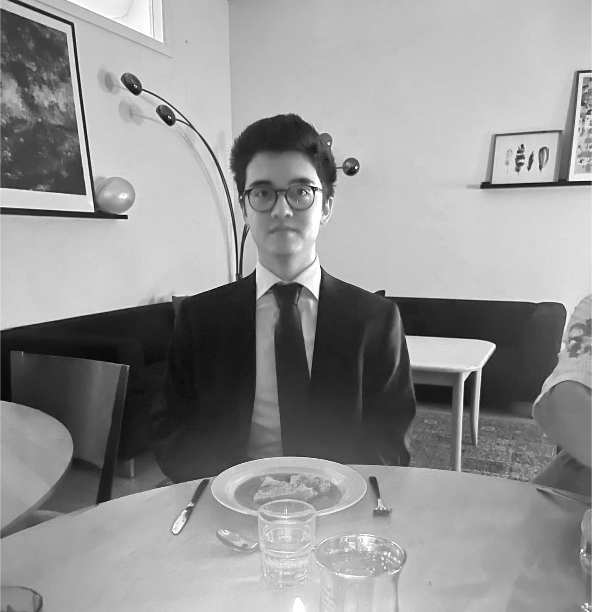
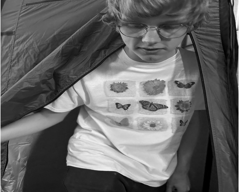
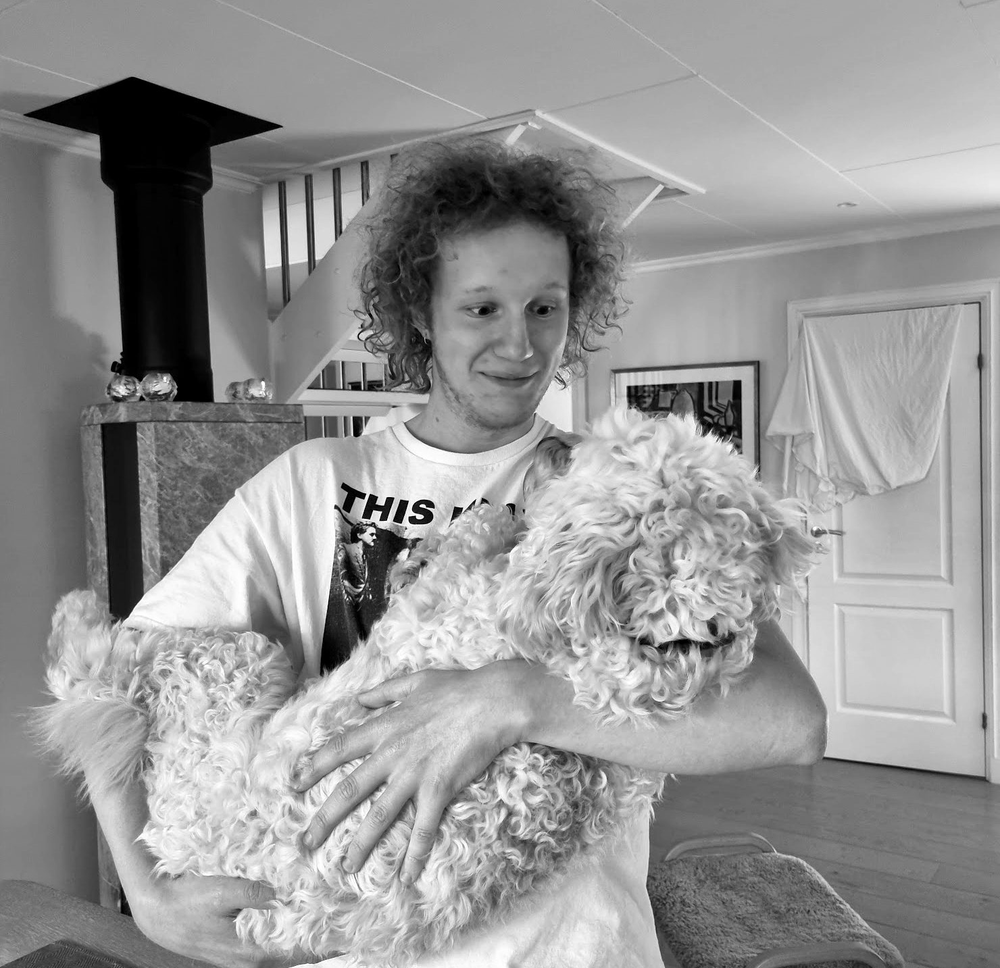
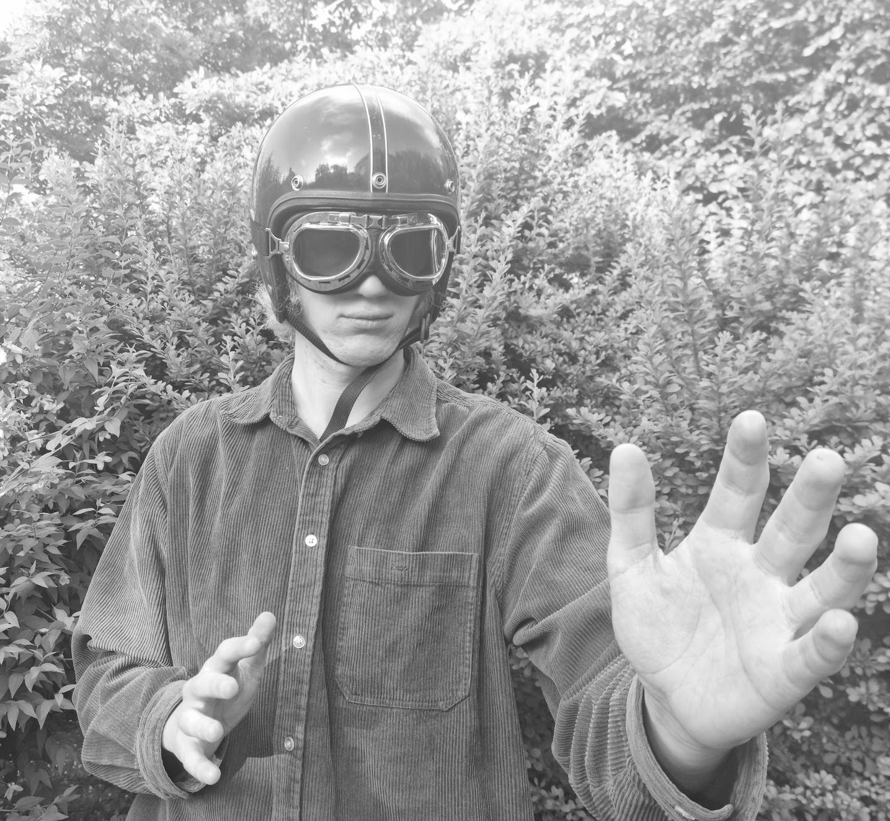
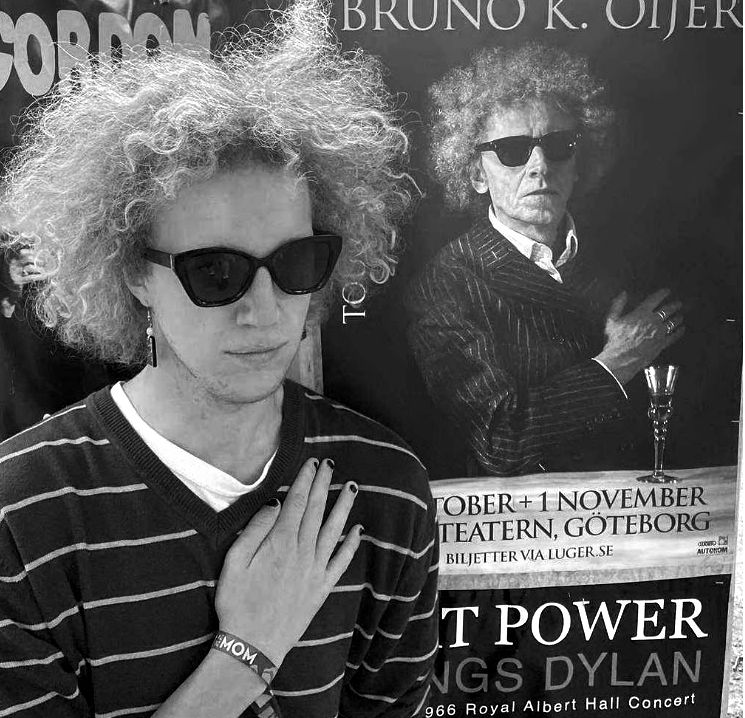

Senaste nytt
ETTA I ÅRETS DRAFT!
Redaktionen · 12 oktober 2026

Efter veckor av vilda spekulationer bland självutnämnda experter och dussintals analyserade basgångar står det nu klart: Emil Pellsäter tingas som #1 overall av nettle.skin i årets NTLSKN draft i lördags 10/10.
nettle.skins General Manager Simon Frantzich om valet:
“Det fanns aldrig något tvivel, han var etta på våran lista. Emil är en begåvad tvåvägsbasist med bra grit och compete. Han sätter tonerna djupt i hörnen bakom ljudteknikern, backcheckar alltid när någon tappar beatet, och klagar aldrig på dålig monitorlyssning.”
Pellsäter skrev genast på ett $1.025M AAV 3-års rookiekontrakt.
Såhär säger han själv om att väljas som #1
“Jag vill tacka min familj, mina lärare och tidigare lagkompisar som hjälpt mig nå hit. Jag är djupt imponerad av nettle.skins organisation och faciliteter. Jag vill också tacka GM Simon, och coacherna Allan, Emansig, och Mkhu som har varit väldigt hjälpsamma och snälla. Att spela för nettle.skin är något jag drömt om hela mitt liv och jag ser fram emot det väldigt mycket.”
Allan får ytterligare en gratis gitarr från mannen i Alingsås
Redaktionen · 7 oktober 2026
I en oväntad och mycket välkomnande vändning har Allan tilldelats ännu en gratis gitarr från mannen i Alingsås. Redaktionen kan nu bekräfta att den extra gitarren, som enligt uppgift skall ha levererats med ett leende och ett stort mått av offentligt samvete, mycket väl kan komma att användas under nettle.skin-spelningen på The Abyss den 10 oktober kl. 20, där Allan förväntas stå på scen med en massiv musikalisk arsenal.
Officiellt utlåtande från team SF
Redaktionen · 7 oktober 2026

Officiellt utlåtande från Simon Frantzich befattande 『ORVARS 23-ÅRSKALAS 』, som förmedlat via Allan Yheter inc. tidigare i förmiddags:
Ärade Orvar, samt hela den samlade klientel som ämnar infinna sig vid Orvars tjugotreåriga födelsedagsfest. Med hjärtat nedtyngt av den djupaste förtvivlan och skammen, måste jag härmed tillkännagiva att min medverkan vid Orvars 23-årskalas tillställningen för närvarande svävar osäkert. Mitt kontrakt med det multinationella gitarrmusik konglomeratet nettle.skin tvingar mig nämligen, genom såväl juridiskt som moraliskt tvivelaktiga villkor, att densamma afton klockan tjugo noll noll framträda med rockmusik på andralånggatans ökända The Abyss estrad. Att dras på marken, skrikandes gråtandes och snorig till gitarrmusikens obevekliga penningvälde framför Orvars tjugotreåriga jubileumsfest känns som om mitt hjärta vore inlåst i en fågelbur och jag svalde nyckeln av misstag. Ty en kamrat fyller 23 blott en gång om livsstiden. Måhända kan jag, om ödet och de multinationella intressena så tillåter, “komma till Orvars hus senare eller ses ute”.
Allans Höfner kan komma på torsdag
Redaktionen · 7 oktober 2026

Det ryktas att Allans Höfner-gitarr kan anlända redan på torsdagen den 8 oktober. Redaktionen följer utveckningen noga och kommer rapportera så snart paketet är i Allan händer.
Allans Höfner åter försenad
Redaktionen · 5 oktober 2026

Allan har fortfarande inte fått sin gitarr efter år och dagar av väntan. Staten har ingen kommentar. Nettle.skin hotar med bojkott av mannen i Alingsås som har gitarren.
Allan spelar på Abyss den 10 oktober
Redaktionen · 5 oktober 2026

Allan ger en spelning på Abyss, tillsammans med nettle.skin lördagen den 10 oktober 2026. Boka in datumet – mer information om kvällen kommer när den finns tillgänglig.
Allan världsmästare i Mario Kart 8 “Bull” på Baby Park
Redaktionen · 5 oktober 2026
Allan har vunnit världsmästerskapet i Mario Kart 8-kategorin “Bull” på Baby Park. Segern säkrades efter en intensiv final där Allan visade prov på både precision och kyligt fokus.